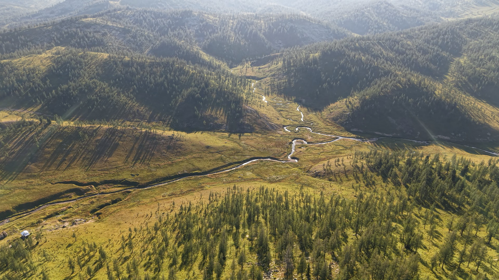
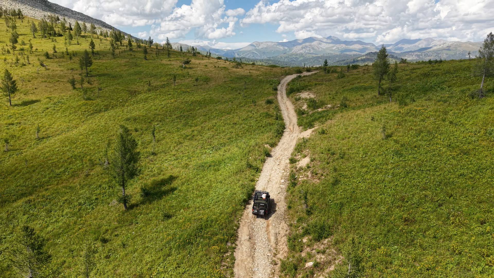

英文文章

Winter · 21 November 2026
East Kazakhstan in winter: snowcats, snowmobiles and freeride in the Altai
阅读 →

Freeride · 21 November 2026
Freeride in Kazakhstan: a guide to Ridder and the Western Altai
阅读 →

Region · 30 June 2026
The Altai Mountains, Kazakhstan: An Unspoiled Frontier of Central Asia
阅读 →

Destination Guide · 30 June 2026
East Kazakhstan: The Complete Adventure Travel Guide for 2026
阅读 →

About Us · 30 June 2026
How Asferia Works: Your Full-Service Travel Partner in East Kazakhstan
阅读 →

Perspective · 30 June 2026
Why Kazakhstan Is the Next Big Adventure Destination in Central Asia
阅读 →